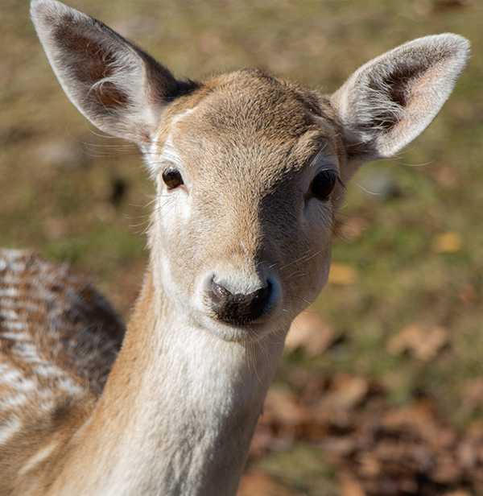

Life of a Deer
Deer or true deer are hoofed ruminant mammals forming the family Cervidae. The two main groups of deer are the Cervinae, including the muntjac, the elk (wapiti), the red deer, the fallow deer, and the chital; and the Capreolinae, including the reindeer (caribou), the roe deer, the mule deer, and the moose. Female reindeer, and male deer of all species except the Chinese water deer, grow and shed new antlers each year. In this they differ from permanently horned antelope, which are part of a different family (Bovidae) within the same order of even-toed ungulates (Artiodactyla).The musk deer (Moschidae) of Asia and chevrotains (Tragulidae) of tropical African and Asian forests are separate families within the ruminant clade (Ruminantia). They are not especially closely related to deer among the Ruminantia.Deer appear in art from Paleolithic cave paintings onwards, and they have played a role in mythology, religion, and literature throughout history, as well as in heraldry, such as red deer occur in the coat of arms of Åland. Their economic importance includes the use of their meat as venison, their skins as soft, strong buckskin, and their antlers as handles for knives. Deer hunting has been a popular activity since at least the Middle Ages and remains a resource for many families today. The highest concentration of large deer species in temperate North America lies in the Canadian Rocky Mountain and Columbia Mountain regions between Alberta and British Columbia.